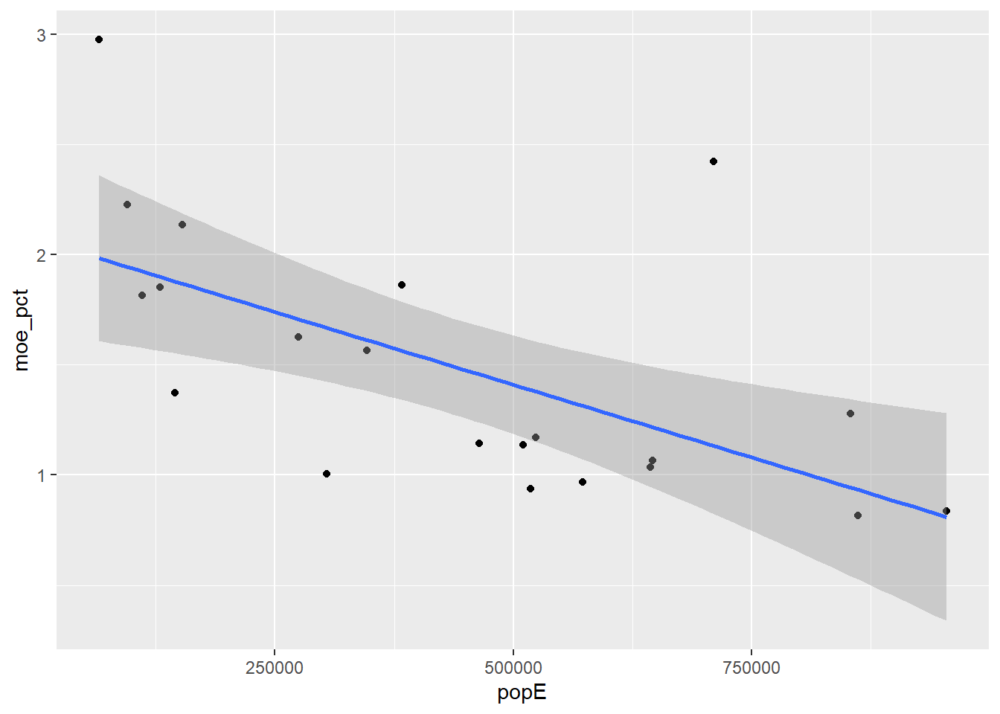

library(tidyverse)
library(tidycensus)
library(dplyr)Setup
The question
In this analysis, I look at median home value across counties in New Jersey, and ask which communities we measure most and least reliably. I just moved to the US, and was picked up by my uncle who lives in NJ - would love to know more about the beautiful houses there and how property prices compare!
Choosing what to measure
# Can be changed and the rest of the code will follow!
my_state <- "NJ" # two-letter abbreviation, in quotes
my_variable <- "B25077_001" # the variable code, in quotesPulling the data
county_data <- get_acs(
geography = "county",
variables = my_variable,
state = my_state,
year = 2023,
survey = "acs5",
output = "wide"
)Let’s look at what came back.
dim(county_data)[1] 21 4head(county_data)# A tibble: 6 × 4
GEOID NAME B25077_001E B25077_001M
<chr> <chr> <dbl> <dbl>
1 34001 Atlantic County, New Jersey 272700 4435
2 34003 Bergen County, New Jersey 593200 4951
3 34005 Burlington County, New Jersey 326700 3737
4 34007 Camden County, New Jersey 262200 3072
5 34009 Cape May County, New Jersey 395000 8798
6 34011 Cumberland County, New Jersey 205600 4394The numbers of rows (21) matches the number of counties in New Jersey.
How big is the margin of error?
A margin of error of 3,000 means something very different for an estimate of 20,000 than for an estimate of 200,000. To compare across places, we need it as a percentage.
# Add column with MoE
county_data <- county_data |>
mutate(moe_pct = B25077_001M / B25077_001E * 100)
# Arrange rows according to descending MoE
county_data |>
arrange(desc(moe_pct)) |>
head(10)# A tibble: 10 × 5
GEOID NAME B25077_001E B25077_001M moe_pct
<chr> <chr> <dbl> <dbl> <dbl>
1 34033 Salem County, New Jersey 223000 6636 2.98
2 34017 Hudson County, New Jersey 508600 12318 2.42
3 34009 Cape May County, New Jersey 395000 8798 2.23
4 34011 Cumberland County, New Jersey 205600 4394 2.14
5 34021 Mercer County, New Jersey 351000 6540 1.86
6 34019 Hunterdon County, New Jersey 498800 9233 1.85
7 34041 Warren County, New Jersey 323100 5865 1.82
8 34001 Atlantic County, New Jersey 272700 4435 1.63
9 34035 Somerset County, New Jersey 523900 8197 1.56
10 34037 Sussex County, New Jersey 342800 4709 1.37Salem County has the largest margin of error relative to its estimate, of 2.98%.
Optimising categories of margin of error
To comput categories for margins of error, Jenks breaks are used to minimise variance within each of the 3 categories of confidence.
library(classInt)
jenks <- classInt::classIntervals(
county_data$moe_pct,
n = 3,
style = "jenks"
)
jenks$brks[1] 0.8147052 1.3736873 1.8632479 2.9757848Sorting counties into reliability categories
county_data <- county_data %>%
mutate(reliability = case_when(
moe_pct <= jenks$brks[2] ~ "High confidence",
moe_pct <= jenks$brks[3] ~ "Moderate confidence",
TRUE ~ "Low confidence"
))
# To remove, during experimentation
# county_data$reliability <- NULL
count(county_data, reliability)# A tibble: 3 × 2
reliability n
<chr> <int>
1 High confidence 12
2 Low confidence 4
3 Moderate confidence 512 counties have high confidence of less than 1.37% margin of error. There are 5 counties with moderate confidence, and 4 with low confidence.
Is the margin of error bigger in small places?
To answer this we need population and our variable side by side, in the same row. That means a wide pull.
county_wide <- get_acs(
geography = "county",
variables = c(myvar = my_variable,
pop = "B01003_001"),
state = my_state,
year = 2023,
survey = "acs5",
output = "wide"
)
head(county_wide)# A tibble: 6 × 6
GEOID NAME myvarE myvarM popE popM
<chr> <chr> <dbl> <dbl> <dbl> <dbl>
1 34001 Atlantic County, New Jersey 272700 4435 274704 NA
2 34003 Bergen County, New Jersey 593200 4951 954717 NA
3 34005 Burlington County, New Jersey 326700 3737 464226 NA
4 34007 Camden County, New Jersey 262200 3072 524042 NA
5 34009 Cape May County, New Jersey 395000 8798 95236 NA
6 34011 Cumberland County, New Jersey 205600 4394 152915 NAcounty_wide <- county_wide %>%
mutate(moe_pct = myvarM / myvarE * 100) %>%
mutate(reliability = case_when(
moe_pct <= jenks$brks[2] ~ "High confidence",
moe_pct <= jenks$brks[3] ~ "Moderate confidence",
TRUE ~ "Low confidence"
))Now we compare the average population of counties in each reliability category.
county_wide %>%
group_by(reliability) %>%
summarize(
n_counties = n(),
avg_population = mean(popE)
) |>
arrange(avg_population)# A tibble: 3 × 3
reliability n_counties avg_population
<chr> <int> <dbl>
1 Moderate confidence 5 248776.
2 Low confidence 4 255900.
3 High confidence 12 583294.There doesn’t seem to be a trend between confidence and population size. Maybe the categories of confidence are too arbitrary.
It would be better to plot, using the actual numerical values of margins of error!
Scatterplot of margins of error against population size
# Generate scatterplot
ggplot(
data = county_wide,
mapping = aes(x = popE, y = moe_pct)
) +
geom_point() +
geom_smooth(method = "lm")
We see a downwards trends based on the best-fit line.
# Computing Pearson's correlation coefficient
cor(county_wide$popE, county_wide$moe_pct, use = "complete.obs")[1] -0.6136624The Pearson’s correlation coefficient indicates that there is a moderately strong negative correlation between population and margin of error (-0.6136624), indicating that as population size increases, the margin of error for house values decreases. This corresponds to how a larger sample size increases reliability as it reduces random error.
What this means for policy
# Final table
final_data <- county_data |>
inner_join(county_wide, by=c("moe_pct","NAME","GEOID","reliability")) |>
select(-myvarM,-popM) |>
arrange(moe_pct) head(final_data)# A tibble: 6 × 8
GEOID NAME B25077_001E B25077_001M moe_pct reliability myvarE popE
<chr> <chr> <dbl> <dbl> <dbl> <chr> <dbl> <dbl>
1 34023 Middlesex Cou… 439300 3579 0.815 High confi… 439300 861535
2 34003 Bergen County… 593200 4951 0.835 High confi… 593200 954717
3 34031 Passaic Count… 439400 4112 0.936 High confi… 439400 518289
4 34039 Union County,… 488800 4723 0.966 High confi… 488800 572549
5 34015 Gloucester Co… 283500 2851 1.01 High confi… 283500 304504
6 34025 Monmouth Coun… 566500 5868 1.04 High confi… 566500 643615 tail(final_data)# A tibble: 6 × 8
GEOID NAME B25077_001E B25077_001M moe_pct reliability myvarE popE
<chr> <chr> <dbl> <dbl> <dbl> <chr> <dbl> <dbl>
1 34019 Hunterdon Cou… 498800 9233 1.85 Moderate c… 498800 129448
2 34021 Mercer County… 351000 6540 1.86 Moderate c… 351000 383286
3 34011 Cumberland Co… 205600 4394 2.14 Low confid… 205600 152915
4 34009 Cape May Coun… 395000 8798 2.23 Low confid… 395000 95236
5 34017 Hudson County… 508600 12318 2.42 Low confid… 508600 710478
6 34033 Salem County,… 223000 6636 2.98 Low confid… 223000 64973The county we can most safely predict house values of is Middlesex County, with a median house value of $440,000. They have the lowest margin of error of 0.81%, thanks to its relatively high population of 860,000.
We have the lowest confidence regarding median home values in Salem County, with the lowest population of 65,000 which likely contributes to its high margin of error of 2.98%.
That’s because the 5-year ACS only samples approximately 5% of households over 5 years in total, rather than a complete count of all housing units. A smaller county would yield a smaller sample size, increasing random error for house value estimates. The use of the median value, however, helps to counter the effect of random error by ignoring extremes.
What could go wrong?
The margin of error introduces false positives about a place for policy analysis. If a county has a high estimated median house value, but also high margin of error, the state might incorrectly conclude that housing is more expensive in that area and allocate less housing assistance (and vice versa). This means resources are not allocated optimally to those in need. This is particularly disadvantageous for those who live in smaller counties with high margins of error whose needs are not represented in the census well.